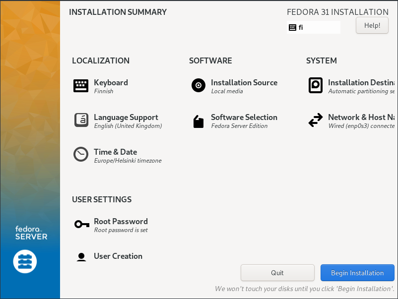

Installing and setting up a Linux server
Published: Updated: Author:
In this project I'll be setting up a linux server using Fedora Server Edition (version 31 at the time of writing). However much of the information detailed here can be used to install any distro you wish with some minor differneces.
This article belonds to a series, the contents of which can be found here. (LINK BOOKMARK)
Creating installation media
Requirements
- 4GB USB flash drive (Any data will be lost from the drive)
- Another Windows or Linux machine
For automatic media creation, see my script on github
Start by downloading your OS image as it can sometimes take a while regardless of your network speed.
We'll be creating bootable media on our USB flash drive, so firstly we should remove any existing data and partition information before extracting our image.
I'll be creating this on linux using the dd command. Firstly we need to identify the USB drive. We can do this using lsblk. Open a terminal and enter in lsblk, it should return the information below
$ lsblk NAME MAJ:MIN RM SIZE RO TYPE MOUNTPOINT sda 8:0 0 232.9G 0 disk ├─sda1 8:1 0 300M 0 part ├─sda2 8:2 0 223.8G 0 part / └─sda3 8:3 0 8.8G 0 part [SWAP] sdb 8:16 0 477G 0 disk └─sdb1 8:17 0 477G 0 part /mnt/performance sdc 8:32 1 7.5G 0 disk ├─sdc1 8:33 1 2G 0 part └─sdc2 8:34 1 10.6M 0 part sr0 11:0 1 1024M 0 rom
Take a look at the information returned, we can determine our drive by the size. If you need to determine by serial number then you can use $ lsblk --nodeps -o name,serial
We can wipe the drive of any partitions and data using the below, remember to replace /dev/sdX with the name of your drive as found from executing the above. This may take a while depending on the size of your drive.
$ sudo dd if=/dev/zero of=/dev/sdc bs=1M status=progress
Once complete we can use the lsblk again and it should show our drive to be blank and without any partitions.
Now we can use dd again to write our ISO image to the disk using the below command
$ sudo dd if=/home/user/Downloads/fedora.iso of=/dev/sdX status=progress
Before removing the drive use $ sync to ensure all data is written to the disk. Now we're ready to start the installation.
Installing Linux (Fedora Server 31)
If you've not already it maybe worth checking your UEFI boot settings to see if it has any options for the OS used. I'd normally recommend to disable secure boot also as it maybe sometimes cause issues with propirity drivers while not offering much advantage. When ready, boot the server from your USB drive, ensuring to select the UEFI boot mode.
Select the suitable values for the installation and begin the installation.
After the installation, select to reboot the machine and await for the first boot to be complete. We should now have a fully intalled linux server. For Fedora it will generally come with a web console preinstalled such as Cockpit, accessable from port 9090.
Lets use this UI to check for updates, firstly go to the IP address given by the server. Login and select the option to use your password for privilaged tasks, ensuring your logging in with an account that is an admin (within the sudoers group). Go to software updates and ensure the system is update to date and reboot.
What can we do with our new server? Check my other articles for some insperation!